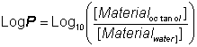
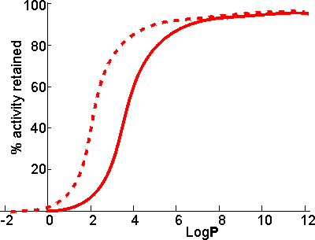

Enzyme Technology
The stabilisation of enzymes in biphasic aqueous-organic systems
It should become clear from the later discussion that there may
be a substantial advantage to be gained from the use of biphasic systems in many
enzyme-catalysed reactions. One major factor must first be addressed; the
stability of the enzyme in these systems. A distinction should be drawn between
the more water-soluble hydrophilic enzymes and the more hydrophobic enzymes
often associated with lipid and membranes (e.g., lipases). The active integrity
and stability of hydrophilic enzymes appears to depend on the presence of a thin
layer of water, just a few molecules thick, within the microenvironment. This
amount of water is miniscule (between 50 and 500 molecules of water for each
enzyme molecule) and the enzyme may effectively be operating in an almost
anhydrous state. Some hydrophobic lipases retain activity even if fewer
molecules of water remain; presumably just sufficient to stabilise the
conformation of the active site. The pH of such minute pools of water,
containing no free hydrogen ions, is impossible to measure, or control,
directly. However, it appears that the enzyme 'remembers' the pH of its last
aqueous solution and functions as though at that pH. If the enzyme-bound water
is stripped out or diluted by the use of the more water-soluble, or miscible,
organic solvents then the enzyme is usually inactivated. However, under
conditions where this does not occur, the limited amount of water available, and
the associated reduction in the water activity, considerably reduces the rate of
thermoinactivation. This has a stabilising effect on most enzymes; porcine
pancreatic lipase, for example, has a half-life of greater than 12 hours at 100°C in 0.02% water in tributyrin, whereas this drops to 12 minutes
at a 0.8% water content and inactivation is almost instantaneous in 100% water.
Additionally, the freezing point of the water is reduced which allows the use of
particularly heat-labile enzymes at very low temperatures. The lowering of the
water activity tends to produce a more rigid enzyme molecule which may affect
both its Km and Vmax. In extreme cases, this may result in a
change in the catalytic properties. Porcine pancreatic lipase demonstrates this
effect. When used in biphasic systems of low water activity, it no longer
catalyzes transesterification reactions involving the bulky tertiary alcohols.
The most important factor in the balance between stabilisation and
inactivation, due to organic phase, is the solvent polarity. Solvents of lower
polarity (i.e., greater hydrophobicity) are less able to disrupt the structure of
the necessary tightly bound water molecules. The best measure of polarity is the
logarithm of the partition coefficient (LogP) of the organic
liquid between n-octanol and water; the higher the LogP, the
more non-polar (hydrophobic) is the solvent (Table 7.1).

(7.1)
Table 7.1. LogP values of the
more commonly used organic solvents.
|
Solvent
|
LogP
|
Solvent
|
LogP
|
|
Butanone
|
0.3
|
1,1,1-trichloroethane
|
2.8
|
|
Ethyl acetate
|
0.7
|
Carbon
tetrachloride
|
2.8
|
|
Butanol
|
0.8
|
Dibutyl ether
|
2.9
|
|
Diethyl ether
|
0.8
|
Cyclohexane
|
3.1
|
|
Methylene chloride
|
1.4
|
Hexane
|
3.5
|
|
Butyl acetate
|
1.7
|
Petroleum ether (60-80)
|
3.5
|
|
Di-isopropyl ether
|
2.0
|
Petroleum ether (80-100)
|
3.8
|
|
Benzene
|
2.0
|
Dipentyl
ether
|
3.9
|
|
Chloroform
|
2.2
|
Heptane
|
4.0
|
|
Tetrachloroethylene
|
2.3
|
Petroleum ether (100-120)
|
4.3
|
|
Toluene
|
2.7
|
Hexadecane
|
8.7
|
LogP values increase by
about 0.52 for every methylene group (-CH2-) added in an homologous
series. Thus, the LogP of hexanol is that of butanol (0.8) plus
2 ˣ 0.52 (i.e., approximately 1.8).
There appears to be
a clear correlation between the activity of biocatalysts in two-phase systems
and the LogP (Figure 7.2). The S-shape of this relationship
suggests that enzymes are generally inactivated by solvents with
logP < 2 but are little affected by solvents with
LogP > 4. There is some variation in the effects between
different enzymes and different solvents which makes activity prediction, in the
LogP range of 2 - 4, rather imprecise. This range includes some
of the most utilised organic phases (e.g., chloroform), which may be suitable for
some applications but cause harmful inactivation in others. The solubility of
the reactant(s) and product(s) may considerably reduce the range of
LogP that are available for a particular application; many
basically nonpolar molecules possessing some polar structural regions which
cause their lack of solubility in strongly hydrophobic solvents. The choice of
organic phase will also depend on additional factors such as cost, ease of
recovery, fire and fume hazards and specific inhibitory effects. The S-shaped
curve can be shifted to the left by immobilising the enzyme within a highly
hydrophilic support (Figure 7.2). A simple way of achieving this is to
impregnate a beaded hydrophilic polymer (e.g., Sephadex, agarose) with the enzyme
followed by suspension of the wet beads directly in the organic phase. These
shifts are very important as they greatly increase the choice of suitable
organic phase. Such impregnated beads have the additional advantages that
- they protect the contained enzyme from liquid-liquid interfacial denaturation at
higher rates of stirring;
- they enable more facile recovery of the
biocatalyst;
- they may be used with low molecular weight hydrophilic
coenzymes (e.g., NAD(P)+) with the assistance of a coenzyme regenerating
process; the coenzyme being effectively immobilised within the aqueous pools;
and
- they allow the efficient and continuous use of biphasic PBRs, so long as
the moving organic phase remains saturated with water.

Figure 7.2. Schematic diagram showing the dependence
of the activity of immobilised enzymes, in biphasic systems, on the
LogP of the organic phase. ———
free enzyme; --------
enzyme immobilised within a strongly hydrophilic support.
Biphasic systems may be further stabilised by the use of deuterated
water (D2O). This reduces the rate of thermal inactivation, although
it does cause an increase in the pKas of ionising groups by about 0.4
with the associated changes in the pH-activity and pH-stability relationships.
The higher cost of the deuterated water is offset, to a certain extent, by the
small amount necessary in these systems and the ease with which it may be
recovered at the end of a catalytic process.
Even where the organic solvent has
very low LogP and is miscible, the effect of the expected loss
in enzymic activity may be offset by changes in the equilibrium constant. Thus
it has been proposed that glucose isomerase be used in aqueous ethanol to
produce high fructose corn syrup. The equilibrium fraction of fructose can be
raised by about 10% to 55% at 30°C in 80% v/v ethanol. This is
economically valid even though the enzymic activity drops by about 10% compared
to that in the absence of ethanol.
Home
| Back | Next
This page was established in 2004 and last updated by Martin
Chaplin
on
12 December, 2015
|